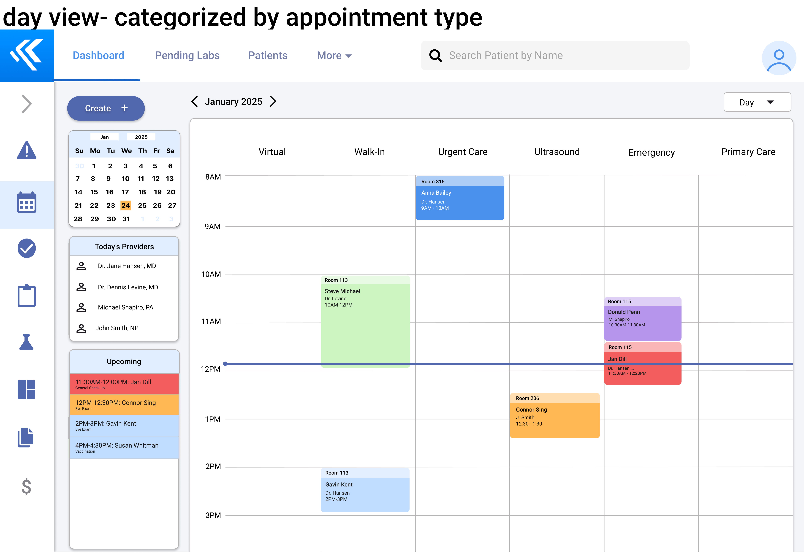

UI/UX Case Study: Medical Assistant Calendar
Trisha Tong | Winter 2025
Overview
Our project focuses on addressing the difficulties healthcare workers experience using digital tools in their workplace. Specifically, we decided to interview Medical Assistants and discuss any challenges they are currently facing. Medical Assistants are the backbone for healthcare centers—they are the ones maintaining medical records, interacting with patients, and handling medical equipment. Understanding their role's significance drove us to talk with medical assistants at an urgent care in San Jose and a health center in San Diego respectively. By addressing any challenges they face, we aim to improve their interaction with healthcare technology, ultimately enhancing patient care and operational efficiency.
My Role
As a key contributor to this project, I was involved in multiple phases of the design and research process, including:
- Conducting user research and gathering insights to inform design decisions
- Creating user personas and portfolios to understand target demographics
- Mapping out workflows and user interactions for seamless experiences
- Designing both low-fidelity and high-fidelity prototypes in Figma
- Writing portions of the case study and documentation for clarity and presentation
This was a collaborative project with a team of four, where I worked closely with other designers to ensure a cohesive user experience.
Problem Statement
How can we design a streamlined process that efficiently manages patient data and communicates it to relevant medical staff with software, allowing them to focus on patient care instead of technical difficulties?
Research
For our user research, we conducted two interviews: one via Zoom and one in person, each lasting approximately one hour. Our interviewees were both medical assistants, working for different clinics. After obtaining consent to record the interviews, we asked the participants to share an overview of their position, their organization, and how long they've been working there. We then inquired about their role, typical responsibilities, and what a typical week at work looks like for them. From there, we transitioned to discussing their primary tasks and the apps or tools they currently use in their work. They walked us through how they use these tools, the challenges they encounter, and the specific aspects of the tools they would like to see improved.
Stakeholder #1
Participant 1, a medical assistant at an urgent care in San Jose, manages both front and back office responsibilities, including patient intake, triage, and assisting with procedures like blood draws and rapid tests. Her role also involves extensive documentation using two primary systems: Kyla for charting and AI-powered transcription, and DrChrono for scheduling and insurance processing. While Kyla is the preferred tool for most tasks, Participant 1 must frequently switch between the two due to limited integration, creating inefficiencies and adding to her workload.
Key pain points:
- DrChrono is slow, outdated, and lacks auto-save.
- Kyla has rigid templates and lacks scheduling/insurance features.
- Both systems require manual re-entry due to incomplete data synchronization.
- Desires an integrated system with auto-save, customizable charting, and better synchronization.
Stakeholder #2
Participant 2 from a health center in San Diego has been a Discharge Medical Assistant for 1 year and 5 months. His primary responsibilities include scheduling patient appointments, managing imaging and lab orders, and troubleshooting operational issues. He uses ECW, Google Suite, and 3CX in his workflow.
Key pain points:
- ECW has inefficient UI with cluttered navigation and redundant text.
- Lack of integrated messaging, leading to the use of third-party apps.
- Google Suite is used for unofficial notes that can't be stored in ECW.
- 3CX Phone App lacks search functionality, requiring manual scrolling.
- Wants a unified system that integrates all tools to reduce inefficiencies.
Personas & User Journeys
We developed fictional personas to better understand the needs of our target audience.
User Flows
User Flow 1
This UX flow addresses the problem of not having integrated features on the same software. Although Kyla had a simpler and more user friendly interface, it was missing the scheduling features of DrChrono that allowed the medical staff to see the status of patients during their appointment process. Our extension of Kyla would add this calendar page as its own section from the sidebar menu. We chose the entry point to be from this button on the home page, as it is a page the medical assistants view often and find helpful, based on our interviews. The simplicity in the tool and integration would allow Susan White to not have to adapt to multiple technologies. While this extension pulls from DrChrono and ECW's scheduling pages, our flow extends the options of what details can be shown and statuses to update, such as tasks, tests to run, and prescriptions that can be assigned to different medical staff. This might help to address Daniel George's lack of messaging to communicate with other physicians because it would allow all medical staff to see updates on what stages patients and tasks are in.
User Flow 2
This second UX flow begins with the user opening up Kyla, an existing healthcare app. We determined that a calendar extension would be a critical addition, providing a visual representation of the clinic's appointments/agenda. To ensure seamless access without unnecessary navigational steps, we placed the calendar entry point on the landing page. The patient data is organized in a clear, user-friendly format, making it easy to locate specific information instead of having to search through multiple sections of the software. Similar to services like Google Calendar, the user has the option to view the calendar in various modes for flexible scheduling. Additionally, inspired by other medical scheduling services (e.g. ECW, referenced in one of our interviews), the user has preset patient status fields to streamline clinic workflow.
Lo-Fidelity Wireframes
These sketches were based off of flow 1, showing the main pages that users would interact with in this flow. The first 3 sketches are of users who want to see and edit an existing event and the second 3 sketches are of users who go through the process of making a new event. The main calendar page layout is based on DrChrono's scheduling page and the detail pages incorporate some elements from Google Calendar.
These sketches are based on the existing Kyla interface. The first two implements a full screen calendar and half screen calendar, with the next two sketches implement the event detail view, and the last one shows the task page.
These sketches are based on Flow 2. The first sketch provides an overview of the calendar page, assuming the user has already selected the calendar icon from the homepage. It also includes features like events, schedule, home, and more. The following four sketches represent different calendar views: day, week, month, and agenda. Certain elements were inspired by Google Calendar.
These sketches are based on Flow 2. Each view option is depicted - week (default), month, day, and agenda. One screen shows a close up of an event if the user clicks on a specific one. This screen includes more details about the event and the patient, as well as gives an option to edit. These sketches incorporate elements from Google Calendar, Kyla, and other medical scheduling softwares.
Hi-Fidelity Prototypes
Prototype A
Prototype B
For our 2 calendar prototypes, we chose to focus on a room-based approach (Prototype A) and an agenda-based approach (Prototype B). For both prototypes, we wanted the default view to be a “Week View”, which was something we drew from various UI sketches in Milestone 3. Prototype A's daily view shows the calendar events grouped by room (screen 2), with each column representing a different exam or surgery room. The rows still show the hourly time. This view was inspired by the option given in DrChrono's schedule feature, allowing physicians to visualize where patients are and what rooms are available over time. When creating a new event (screens 3 and 4), a split view side drawer appears for maximum space to input more detail. There are 2 pages, with the first focusing on patient and appointment details, and the second optional one giving the ability to add tasks. Viewing an already created appointment also opens that side drawer with the option to update statuses directly from the dropdowns without needing to use the edit button. This prototype was heavily inspired by the Flow 1 Version 1 UI sketches with the condensing of some sections of creating a new event. For Prototype B, clicking the Agenda button leads to a side screen that displays the tasks for the office. This was slightly different from our UI sketches from Milestone 3, in which we had the Agenda view take up the full screen. We concluded that having a split screen would allow the user to still interact with the calendar on the side, which would be visually helpful. Additionally, we added a filtering feature that allows the user to see their specific tasks rather than everyone's. By narrowing down the information to the individual, the filtering option provides a personal, efficient user experience.
High-Fidelity Prototypes Feedback
We conducted more user research on our high-fidelity prototypes.
Stakeholder #1
Stakeholder #1 was the same as our previous participant #1, a medical assistant at an urgent care in San Diego. One of her main confusions was what the tasks section on the left side bar was for. She wouldn't normally consider appointments under the category of tasks and found it redundant to mark tasks as complete if the status is already being changed. She preferred having the side bar always visible with the month calendar. She found the creating event popup intuitive and contained all the information she would need to input. She preferred for tasks to be organized under what patient they're attached to and to show urgency with colors instead of a due date. She would primarily use the shared tasks out of all of the pages so that other medical staff could be on the same page on what is being done.
Stakeholder #2
Stakeholder #2 was the same as our previous participant #2, a medical assistant at a health center in San Diego. His suggestions included minor fixes such as alignment adjustments, adding appropriate titles, and improving the organization of status appointments on the homepage's week view. For the day view, he recommended including a profile picture, similar to the week view. He also suggested displaying additional event details, such as the patient's date of birth (DOB), reason for visit, and the assigned doctor. In the event details popup, he preferred using "OK" instead of "Save" to confirm changes, as "Save" could create confusion by implying that a file is being saved. Additionally, he proposed changing “Add Title” to “Reason for Visit” for better clarity. Regarding patient search functionality, he recommended offering multiple search options, such as DOB, patient record number, and name. He also preferred a movable popup instead of a split-screen layout. For the event details popup, he found some symbols unclear and suggested adding more clarity about the patient's visit purpose. For individual tasks, he advised displaying tasks in separate boxes rather than as a checklist and recommended adding a toggle to minimize or expand the task bar.
Final Design & Results
These final UI screens showcase the improvements made based on user feedback and testing.
Homepage (Default Week View)
Homepage (Day View)
Week View - Create Event Popup
Week View - Event Details Popup

Homepage - Notes Feature
Homepage - Shared Tasks
Homepage - Individual Tasks
Overall, we made several changes to our high fidelity prototypes in response to the feedback we got. While the layout of each page remained the same, we were able to receive feedback to improve the smaller details of our final prototype. Here are some improvements relating to the two screens above:
- In our main calendar (week view and day view), we updated the colors which were meant to indicate status to be more vibrant, as well as accessible to colorblind individuals. We also updated the statuses to reflect the actual stages of an appointment, rather than our assumptions of the process.
- As for the event details popup, we added more distinct separations to the types of information relevant to the appointment, since our initial organization and hierarchy of information was confusing for stakeholders view quickly.
- We also changed our side bar from “tasks” to “upcoming appointments” - which provides more important and relevant information to medical assistants.
- Regarding visual changes, we made our screens more consistent (corner radiuses, font sizes, button and pop-up components, etc).
- We also updated our calendar appearance to be more resembling of a calendar app, as opposed to a standard spreadsheet table.
Reflection
This project was an eye-opening experience that deepened my understanding of UI/UX design and user research. Working closely with medical assistants gave me valuable insights into how healthcare workers interact with digital tools, highlighting the importance of usability and efficiency in software design.
One of the biggest challenges was balancing user needs with system constraints. While designing the calendar interface, we had to ensure it was both intuitive and functional, addressing user pain points such as scheduling inefficiencies and task management confusion. Through multiple iterations, usability testing, and stakeholder feedback, we refined our design to enhance workflow efficiency.
This project reinforced the importance of collaborative design, as working in a team of four required constant communication and iteration. Additionally, prototyping in Figma helped me sharpen my wireframing and high-fidelity design skills. If given more time, I would further refine the task management integration and explore alternative visual representations for patient status tracking.
Overall, I thoroughly enjoyed this experience! It solidified my passion for human-centered design, and I look forward to applying these learnings to future projects.